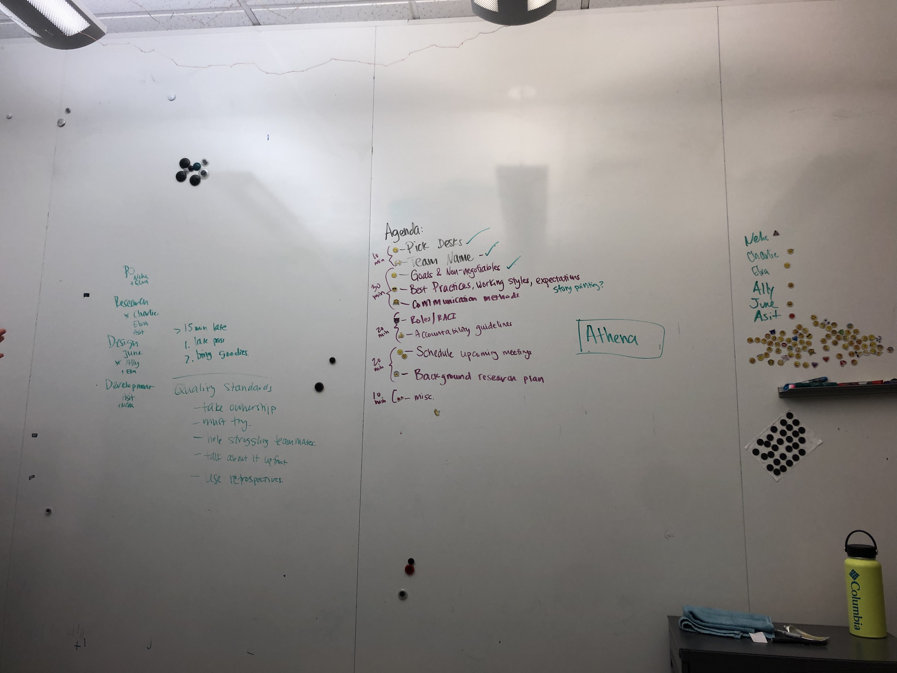
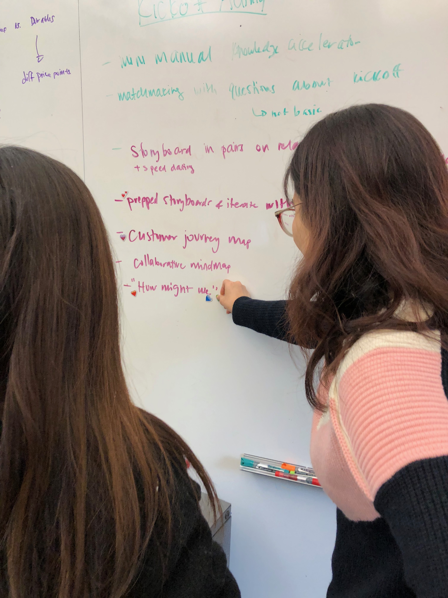

Sprint 0Formulating a shared vision
Set expectations and guidelines to foster a shared vision of team culture, and begin to gain understanding of the project space
By putting team goals, expectations, best practices and non-negotiables into a document, it forced the team to talk about all of these areas explicitly upfront. We were able to each raise our own ideas of what "done" deliverables look like, what communication methods are acceptable depending on the scenario and what our goals were for this team and this project. The team contract became the foundational cornerstone on which we launched our activities for the next several months, including our first critical client interaction.
Each team member came to our initial team meeting with individual ideas of goals and best practices, both for the team and for ourselves.
We codified team expectations and team culture, including communication methods, roles and responsibilities. After building our foundational building blocks for team culture through discussion of goals, best practices and accountability, we put our words into action through our first team task: background research for our project.
The entire space of online sensemaking was completely new to us, so we had a lot of ground to cover. We did several iterations of background research, starting with discovering anything and everything we could learn about online sensemaking, our clients, online shopping, machine learning and crowdsourcing - the key components of our project description. The space was nebulous and overwhelming, but by using communication and accountability standards we had established for our team, we were able to work together to build a shared understanding of the space.
The culmination of two weeks' worth of teamwork, diving deeply together in a space we knew little about with a team dynamic we had just defined, was our “kickoff meeting”. This meeting allowed us to present our team understanding of the project space to our client and discuss meaningful critical questions about the project with the client to shape our direction for the next 3 months.
Through our initial background research and our set team expectations, we started diving deeper into the problem space to understand our domain.
By working together on our initial research, we were able to put our team expectations into practice quickly and utilized the team contract to guide us from forming to norming.